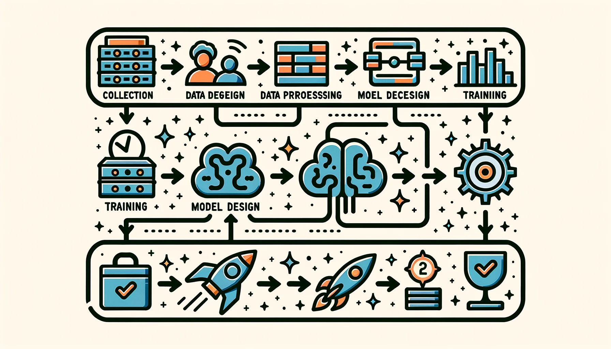

4 Workflow dell’IA
Risorse: Slide, Video, Esercizi

Il flusso di lavoro del ML è un approccio strutturato che guida professionisti e ricercatori attraverso lo sviluppo, l’implementazione e la manutenzione di modelli di ML. Questo flusso di lavoro è generalmente suddiviso in diverse fasi cruciali, ciascuna delle quali contribuisce allo sviluppo efficace di sistemi intelligenti.
In questo capitolo esploreremo il flusso di lavoro del machine learning, ponendo le basi per i capitoli successivi che approfondiranno le specifiche. Questo capitolo si concentra solo sulla presentazione di una panoramica di alto livello dei passaggi coinvolti nel flusso di lavoro ML.
Comprendere il flusso di lavoro ML e acquisire informazioni sull’approccio strutturato e sulle fasi di sviluppo, distribuzione e manutenzione dei modelli di apprendimento automatico.
Scoprire le sfide e le distinzioni uniche tra i flussi di lavoro per il machine learning tradizionale e l’intelligenza artificiale embedded.
Apprezzare i ruoli nei progetti di ML e comprenderne le responsabilità e il significato.
Comprendere l’importanza, le applicazioni e le considerazioni per l’implementazione dei modelli ML in ambienti con risorse limitate.
Acquisire consapevolezza degli aspetti etici e legali che devono essere considerati e rispettati nei progetti ML e intelligenza artificiale embedded.
Stabilire una comprensione di base dei flussi di lavoro e dei ruoli di ML per essere ben preparati per un’esplorazione più approfondita nei capitoli seguenti.
4.1 Panoramica
Figura 4.1 illustra il flusso di lavoro sistematico necessario per sviluppare un modello di machine learning di successo. Questo processo end-to-end, comunemente denominato ciclo di vita del machine learning, consente di creare, distribuire e gestire i modelli in modo efficace. Solitamente comporta i seguenti passaggi chiave:
- Definizione del Problema - Si inizia articolando chiaramente il problema specifico da risolvere. Questo si concentra sui problemi durante la raccolta dati e la creazione del modello.
- Raccolta e Preparazione dei Dati: Raccogliere dati di training pertinenti e di alta qualità che catturino tutti gli aspetti del problema. Pulire e pre-elaborare i dati per prepararli alla modellazione.
- Selezione e Training del Modello: Scegliere un algoritmo di apprendimento automatico adatto al tipo di problema e ai dati. Considerare i pro e i contro dei diversi approcci. Inserire i dati preparati nel modello per addestrarlo. Il tempo di addestramento varia in base alle dimensioni dei dati e alla complessità del modello.
- Valutazione del Modello: Testare il modello addestrato su nuovi dati non ancora esaminati per misurarne l’accuratezza predittiva. Identificare eventuali limitazioni.
- Distribuzione del Modello: Integrare il modello convalidato in applicazioni o sistemi per avviarne l’operatività.
- Monitoraggio e Manutenzione: Tenere traccia delle prestazioni del modello in produzione. Ri-addestrare periodicamente su nuovi dati per mantenerli aggiornati.
Seguire questo flusso di lavoro ML strutturato ci guida attraverso le fasi chiave dello sviluppo. Garantisce di creare modelli efficaci e robusti pronti per la distribuzione nel mondo reale, con conseguenti modelli di qualità superiore che risolvono le varie esigenze.
Il flusso di lavoro ML è iterativo, richiede un monitoraggio continuo e potenziali aggiustamenti. Ulteriori considerazioni includono:
- Controllo della Versione: Tenere traccia delle modifiche al codice e ai dati per riprodurre i risultati e ripristinare le versioni precedenti se necessario.
- Documentazione: Mantenere una documentazione dettagliata per la comprensione e la riproduzione del flusso di lavoro.
- Test: Testare rigorosamente il flusso di lavoro per garantirne la funzionalità.
- Sicurezza: Proteggere il flusso di lavoro e i dati quando si distribuiscono modelli in contesti di produzione.
4.2 IA Tradizionale o Embedded
Il flusso di lavoro ML è una guida universale applicabile su diverse piattaforme, tra cui soluzioni basate su cloud, edge computing e TinyML. Tuttavia, il flusso di lavoro per l’IA Embedded introduce complessità e sfide uniche, rendendolo un dominio accattivante e aprendo la strada a innovazioni straordinarie. Figura 4.2 illustra le differenze tra Machine Learning e Deep Learning.
Figura 4.3 illustra gli utilizzi dell’intelligenza artificiale embedded in vari settori.
4.2.1 Ottimizzazione delle Risorse
- Flusso di Lavoro ML Tradizionale: Questo workflow dà priorità all’accuratezza e alle prestazioni del modello, spesso sfruttando abbondanti risorse di calcolo in ambienti cloud o data center.
- Flusso di Lavoro IA Embedded: Dati i vincoli di risorse dei sistemi embedded, questo flusso di lavoro richiede un’attenta pianificazione per ottimizzare le dimensioni del modello e le richieste di calcolo. Tecniche come la quantizzazione e il pruning [potatura] del modello sono fondamentali.
4.2.2 Elaborazione in Real-time
- Flusso di Lavoro ML Tradizionale: Meno enfasi sull’elaborazione in tempo reale, spesso basata sull’elaborazione di dati in batch.
- Flusso di Lavoro IA Embedded: Dà priorità all’elaborazione dei dati in tempo reale, rendendo essenziali bassa latenza ed esecuzione rapida, soprattutto in applicazioni come veicoli autonomi e automazione industriale.
4.2.3 Gestione dei Dati e Privacy
- Flusso di Lavoro ML Tradizionale: Elabora i dati in posizioni centralizzate, spesso richiedendo un ampio trasferimento di dati e concentrandosi sulla sicurezza dei dati durante il transito e l’archiviazione.
- Flusso di Lavoro IA Embedded: Questo workflow sfrutta l’edge computing per elaborare i dati più vicino alla fonte, riducendo la trasmissione dei dati e migliorando la privacy tramite la localizzazione dei dati.
4.2.4 Integrazione Hardware-Software
- Flusso di Lavoro ML Tradizionale: In genere funziona su hardware generico, con sviluppo di software indipendente.
- Flusso di Lavoro IA Embedded: Questo flusso di lavoro prevede un approccio più integrato allo sviluppo hardware e software, spesso incorporando chip personalizzati o acceleratori hardware per ottenere prestazioni ottimali.
4.3 Ruoli e responsabilità
La creazione di una soluzione ML, in particolare per l’intelligenza artificiale embedded, è uno sforzo multidisciplinare che coinvolge vari specialisti. A differenza dello sviluppo software tradizionale, la creazione di una soluzione ML richiede un approccio multidisciplinare a causa della natura sperimentale dello sviluppo del modello e dei requisiti ad alta intensità di risorse per il training e l’implementazione di questi modelli.
C’è una forte necessità di ruoli incentrati sui dati per il successo delle pipeline di apprendimento automatico. Gli scienziati dei dati e gli ingegneri dei dati gestiscono la raccolta dei dati, creano pipeline di dati e ne garantiscono la qualità. Poiché la natura dei modelli di apprendimento automatico dipende dai dati che consumano, i modelli sono unici e variano a seconda delle diverse applicazioni, il che richiede un’ampia sperimentazione. I ricercatori e gli ingegneri di apprendimento automatico guidano questa fase sperimentale attraverso test continui, convalida e iterazione per ottenere prestazioni ottimali.
La fase di implementazione richiede spesso hardware e infrastrutture specializzati, poiché i modelli di machine learning possono essere ad alta intensità di risorse, richiedendo un’elevata potenza di calcolo e una gestione efficiente delle risorse. Ciò richiede la collaborazione con gli ingegneri hardware per garantire che l’infrastruttura possa supportare le esigenze computazionali di training e inferenza del modello.
Poiché i modelli prendono decisioni che possono avere un impatto sugli individui e sulla società, gli aspetti etici e legali dell’apprendimento automatico stanno diventando sempre più importanti. Sono necessari esperti di etica e consulenti legali per garantire la conformità agli standard etici e alle normative legali.
Comprendere i vari ruoli coinvolti in un progetto ML è fondamentale per il suo completamento con successo. Tabella 4.1 fornisce una panoramica generale di questi ruoli tipici, anche se è importante notare che i confini tra loro a volte possono essere confusi. Esaminiamo questa ripartizione:
| Ruolo | Responsabilità |
|---|---|
| Project Manager | Supervisiona il progetto, assicurando che le tempistiche e le milestone siano rispettate. |
| Esperti di Dominio | Offrono approfondimenti specifici del dominio per definire i requisiti del progetto. |
| Data Scientist | Specializzati nell’analisi dei dati e nello sviluppo di modelli. |
| Ingegneri di Apprendimento Automatico | Concentrati sullo sviluppo e l’implementazione del modello. |
| Data Scientist | Specializzati nell’analisi dei dati e nello sviluppo di modelli. |
| Embedded Systems Engineer | Integra modelli ML in sistemi embedded. |
| Software Developer | Sviluppa componenti software per l’integrazione del sistema IA. |
| Hardware Engineer | Progetta e ottimizza l’hardware per il sistema AI embedded. |
| UI/UX Designer | Concentrato sulla progettazione incentrata sull’utente. |
| QA Engineer | Assicura che il sistema soddisfi gli standard di qualità. |
| Eticisti e Consulenti Legali | Consulenti sulla conformità etica e legale. |
| Personale Operativo e di Manutenzione | Monitora e mantiene il sistema distribuito. |
| Specialisti della sicurezza | Garantiscono la sicurezza del sistema. |
Questa visione olistica facilita una collaborazione senza soluzione di continuità e alimenta un ambiente maturo per innovazione e scoperte. Man mano che procederemo nei prossimi capitoli, esploreremo l’essenza e le competenze di ciascun ruolo e favoriremo una comprensione più profonda delle complessità coinvolte nei progetti di intelligenza artificiale. Per una discussione più dettagliata degli strumenti e delle tecniche specifici utilizzati da questi ruoli, nonché per un’analisi approfondita delle loro responsabilità, fare riferimento a Sezione 13.5.
4.4 Conclusione
Questo capitolo ha gettato le basi per comprendere il flusso di lavoro dell’apprendimento automatico, un approccio strutturato fondamentale per lo sviluppo, l’implementazione e la manutenzione dei modelli ML. Abbiamo esplorato le sfide uniche affrontate nei flussi di lavoro ML, dove l’ottimizzazione delle risorse, l’elaborazione in tempo reale, la gestione dei dati e l’integrazione hardware-software sono fondamentali. Queste distinzioni sottolineano l’importanza di adattare i flussi di lavoro per soddisfare le esigenze specifiche dell’ambiente applicativo.
Inoltre, abbiamo sottolineato l’importanza della collaborazione multidisciplinare nei progetti ML. Esaminando i diversi ruoli coinvolti, dai data scientist agli ingegneri del software, abbiamo ottenuto una panoramica del lavoro di squadra necessario per affrontare la natura sperimentale e ad alta intensità di risorse dello sviluppo ML. Questa comprensione è fondamentale per promuovere una comunicazione e una collaborazione efficaci tra diversi settori di competenza.
Mentre passiamo a discussioni più dettagliate nei capitoli successivi, questa panoramica di alto livello ci fornisce una prospettiva olistica sul flusso di lavoro ML e sui vari ruoli coinvolti. Queste basi si riveleranno importanti quando approfondiremo aspetti specifici dell’apprendimento automatico, che ci consentiranno di contestualizzare concetti avanzati nel quadro più ampio dello sviluppo e dell’implementazione del machine learning.
4.5 Risorse
Ecco un elenco curato di risorse per supportare studenti e insegnanti nei loro percorsi di apprendimento e insegnamento. Lavoriamo continuamente per espandere questa raccolta e presto aggiungeremo nuovi esercizi.
Queste slide sono uno strumento prezioso per gli insegnanti per tenere lezioni e per gli studenti per rivedere il materiale secondo il proprio ritmo. Incoraggiamo studenti e docenti a sfruttare queste slide per migliorare la loro comprensione e facilitare un trasferimento efficace delle conoscenze.
- Prossimamente.
Per rafforzare i concetti trattati in questo capitolo, abbiamo curato una serie di esercizi che sfidano gli studenti ad applicare le proprie conoscenze e ad approfondire la propria comprensione.
- Prossimamente.